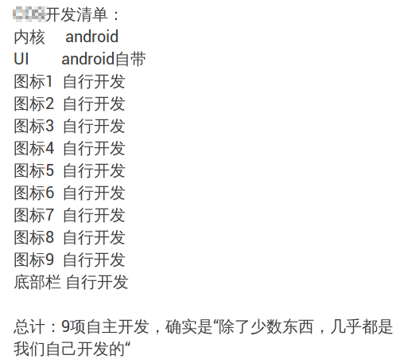

Ubuntu &
Ubuntu Kylin 14.04
Trusty Tahr
by Anthony Wong 黃彥邦 / @ypwong
@ 天津南开大学
About me
- First linux experience is Redhat 4.2
- Accepted as Debian Developer in 1999
- Now maintaining a few packages in Debian and Ubuntu
- Worked at Sun Wah Linux
- Worked at Novell (SUSE)
- Currently working at Canonical
- Hardware Enablement of OEM PC
- Ubuntu Kylin


Ubuntu
(/ʊˈbʊntuː/ uu-buun-too)
"humanity towards others"

- Started as a secret project in Mark Shuttleworth flat in London in April 2004, using
no-name-yet.com - Based on Debian GNU/Linux
- First release 4.10 Warty Warthog
http://ubuntu.hu/node/2433
| 开发代号 | 中文释义 | 发布版本 |
|---|---|---|
| Warty Warthog | 多疣的疣猪 | 4.10 |
| Hoary Hedgehog | 灰白的刺猬 | 5.04 |
| Breezy Badger | 活泼的小獾 | 5.10 |
| Dapper Drake | 帅气的鸭子 | 6.06 LTS |
| Edgy Eft | 急躁的蜥蜴 | 6.10 |
| Feisty Fawn | 好动的小鹿 | 7.04 |
| Gutsy Gibbon | 贪吃的长臂猿 | 7.10 |
| Hardy Heron | 胆大的苍鹭 | 8.04 LTS |
| Intrepid Ibex | 无畏的山羊 | 8.10 |
| Jaunty Jackalope | 快活的怀俄明野兔 | 9.04 |
| Karmic Koala | 命运无尾熊 | 9.10 |

4.10, first release, free shipping

5.04, UTF-8 as default

5.10, graphical boot loader, OEM support, Launchpad

6.06 LTS, new Humanlooks theme, Live and install CD as one
6.10, upstart, apport

7.04

7.10, AppArmor, fast user switching

8.04 LTS, Wubi, Ubuntu Netbook Remix
8.10, DKMS

9.04, Notify OSD
9.10, Ubuntu software center, Eucalyptus, Empathy, ext4, Ubuntu One

10.04 LTS, new purple theme, Plymouth

10.10, Ubuntu font

11.04, Unity, OpenStack preview
11.10

12.04 LTS - 5 years of support, HUD, ARMv7

12.10

13.04, Unity 8 preview
13.10

14.04

Ubuntu Netbook Remix
Key points
- Completely Free Software on CD/DVD images
- LTS for every 2 years
- 9 months support for non-LTS releases
- LTS with 5 years support
- Architectures: x86, amd64, ARM64, IBM Power, Intel Avoton
- Editions: Desktop, Server, Cloud server, Phone, Tablet
- Flavors: Kubuntu, Lubuntu, Xubuntu, Edubuntu, Ubuntu GNOME, Ubuntu Studio, Mythbuntu, Ubuntu Kylin
What's New in 14.04?

- Kernel 3.2 → 3.13
- supports ARM64 and Power
- Intel Avoton
- Haswell (Shark Bay), Broadwell
- SSD TRIM enabled by default
- Hybrid graphics for notebooks with Intel+NVIDIA or Intel+AMD
- NVIDIA Optimus:
nvidia-primeandnvidia-* - AMD PowerXpress:
fglrx-pxpressandfglrx
- NVIDIA Optimus:
- Python 2.7.3 → 3.3 migration
- Oxide web engine based on Chromium
- Unity 8 and Mir are not default 😞
- ... but can be installed as preview 😅
What's New in Unity?
HiDPI Support
Otherwise...

Local menu

Full menu is back for GNOME applications

Old lock screen

New lock screen

Anti-aliased and Borderless Windows
GTK3 CSS-themed window decoration

Anti-aliased and Borderless Windows

Anti-aliased and Borderless Windows

App Spread with Filtering

Ubuntu Touch & SDK
Ubuntu Edge

Ubuntu Edge

- Announced on 22 July 2013
- Crowdfunding at Indiegogo
- 40,000 units
- Target: $32,000,000 in one month
Ubuntu Edge
Raised ...

What is it?

- Ubuntu
- New Unity 8, display server Mir, and UI framework (Qt/QML)
- New touch-oriented applications
- Converged experienced
- Completely open source
- Click packages with app store
- Image based update
- Scopes
- Install instructions
- Ubuntu touch wiki
- Supported development devices:
- Nexus 4 phone
- Nexus 7 (2013) tablet
- Nexus 10 tablet
- 2 Ubuntu phones will be released in 2014
- Meizu (MX3)
- BQ (Aquaris)
Ubuntu Touch Stack

Unity 7 vs Unity 8
- Nux vs QML
- compiz/Xorg vs Mir
- Scopes: python vs C++
- Application isolation
- Application life-cycle
Ubuntu Touch apps on desktop

Unity 8 and Touch apps on desktop
$ sudo apt-get install unity8-desktop-session-mir
$ sudo apt-get install address-book-app webbrowser-app camera-app \
friends-app gallery-app notes-app share-app
$ sudo apt-add-repository ppa:ubuntu-touch-coreapps-drivers/daily
$ sudo apt-get update
$ sudo apt-get install calendar-app dropping-letters music-app rssreader-app \
sudoku-app ubuntu-calculator-app ubuntu-clock-app ubuntu-filemanager-app \
ubuntu-terminal-app ubuntu-weather-app reminders-app
Ubuntu SDK

- Provides platform API
- Ubuntu components UI Toolkit
- QtCreator-based SDK
- Full Cordova support
- Click packaging tools
- App store integration
- http://developer.ubuntu.com/
$ sudo apt-get install ubuntu-sdk
Ubuntu Kylin
Ubuntu Kylin
- 官方认可衍生版 (flavour)
- CD/DVD 镜像里的所有软件必须开源
- 遵循 Ubuntu 社区规则
- CCN 联合开发
- 工业和信息化部软件与集成电路促进中心 (CSIP)
- Canonical
- 国防科大 (NUDT)
害怕这样? 😱

还好不是这样 😙
回顾一下
- 已发布 13.04 及 13.10
- 开发了一些应用，农历日历、天气预报等
- 音乐、视频、图片 scope 开发
- 逐步跟软件应用企业沟通，例如金山
- 壁纸比赛
- 14.04 LTS，５年长期支持
系统特征 —— 系统定制 (1/3)
- 中文化：专业的中文化工作让用户的桌面体验更加舒心！
- 与Ubuntu Loco Team社区携手合作，集中攻关40天，对主要软件界面、软件中心描述以及系统帮助文档进行了全面中文化
- 累计新增翻译5600余条、重新审核翻译56600余条、修正不合理的翻译300余条
系统特征 —— 系统定制 (2/3)
- 裁剪优化：针对Ubuntu国际版本进行裁剪定制，根据中文桌面用户的偏好需求，增加特色软件，完善中文环境，精简无用的服务、软件和语言包，为中文用户提供更友善的系统环境！
- 基于Firefox、Chromium、SMPlayer等组建完整的中文软件环境
- 精简系统非中文语言包和非中文字体
- 默认使用小企鹅输入法，并支持拼音和五笔输入
系统特征 —— 系统定制 (3/3)
- 自定义中文主题：专为中文用户定制的桌面主题，优美的开机动画和壁纸大赛优秀作品，让用户体验到我们在细节上所做的努力！

系统特征 —— 系统应用 (1/4)
- WPS办公套件：国产文字处理工具，兼容微软Office文档格式，强大的图文排版功能、丰富的在线资源，让用户的文档制作既专业又轻松

系统特征 —— 系统应用 (2/4)
- 搜狗输入法：Ubuntu Kylin团队与搜狗公司联合倾力打造，基于小企鹅输入法框架，俱备与Windows、Mac版本完全一致的用户体验

系统特征 —— 系统应用 (3/4)
- 金山快盘：Ubuntu Kylin团队与金山公司联合开发，具备文件同步、备份和共享功能，为用户的个人文件提供安全可控、跨平台的一站式管理体验！

系统特征 —— 系统应用 (4/4)
- 优客助手：专为Linux小白打造的系统级管理与配置工具，具备强大的系统信息展示、一键垃圾清理、系统定制美化等功能

Ubuntu Kylin软件仓库
- 基于天河二号云平台建立Ubuntu Kylin软件仓库
- Ubuntu Kylin软件中心尝鲜版，同时支持Ubuntu和Ubuntu Kylin软件仓库，便于快速安装Ubuntu Kylin团队合作推出的特色软件

致谢 🙇
- 感谢所有参与14.04版本过程的童鞋们：Ubuntu 和 Ubuntu Kylin开发人员、测试人员、美工和用户体验设计者、社区工作者、QQ群和IRC参与者、论坛参与者，Ubuntu Kylin 14.04的成功是成千上万人共同努力的结果！
- 代表 Ubuntu Kylin 开发团队感谢大家的爱护与支持，让我们一起努力，将中国开源操作系统事业做大做强！